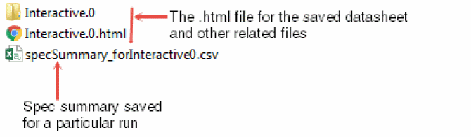
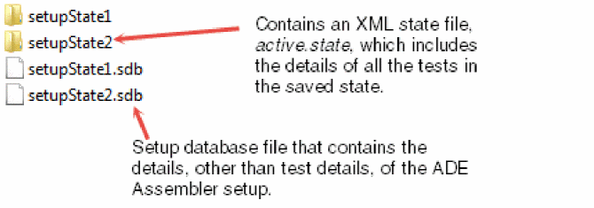
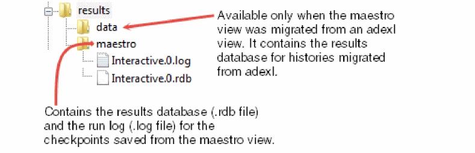
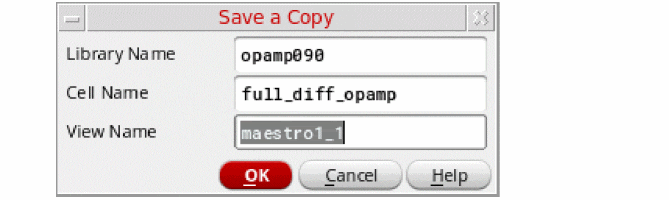
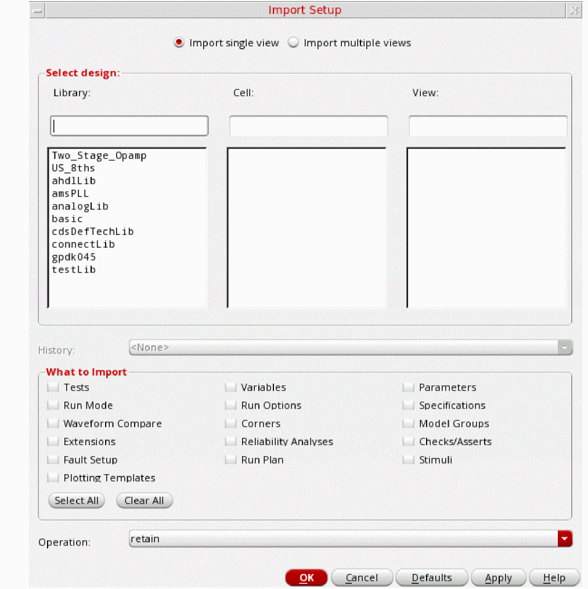
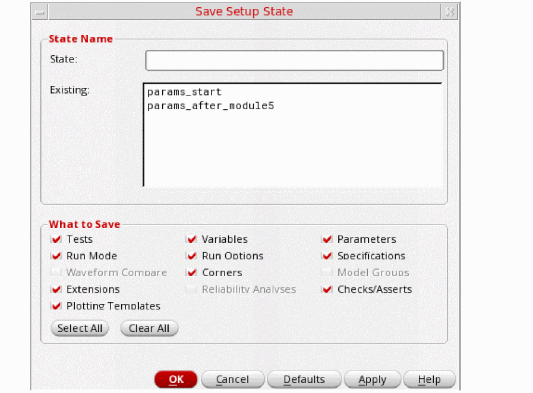
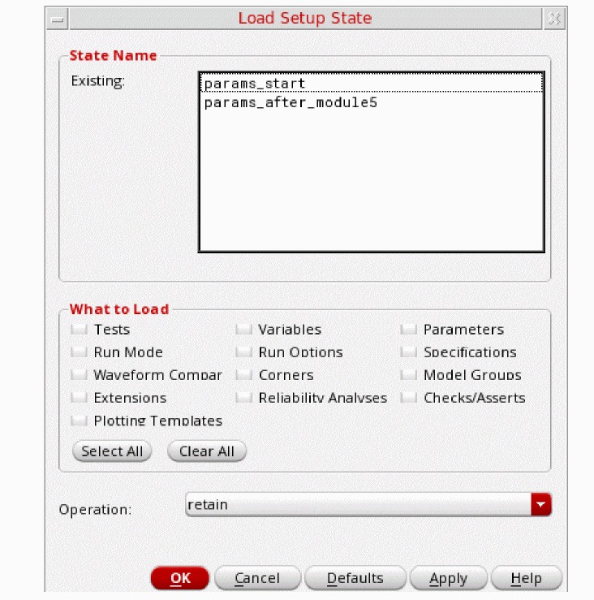
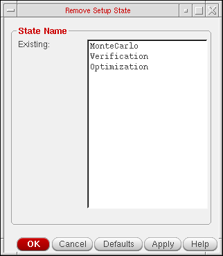
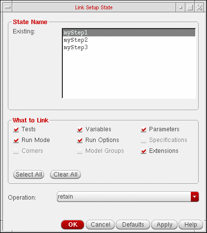

12
Working with the Simulation Setup
This chapter describes the following topics:
- Directory Structure of a Maestro Cellview
- Saving the Simulation Setup
- Copying a maestro Cellview
- Deleting a maestro View
- Working with Read-Only or Editable maestro Views
- Importing the Simulation Setup
- Working with Setup States
- Running a Simulation Using a Setup State
- Creating a Plan Using Setup States
Directory Structure of a Maestro Cellview
The simulation setup in ADE Assembler is saved in a maestro cellview. The default name for this type of cellview is maestro.
A maestro cellview has the following directory structure:
The following table describes the contents of files and directories in the maestro cellview.
| Directory/File | Description |
|---|---|
|
A directory containing the documents you created in the maestro view, including the

|
|
|
A directory containing the results database (
Simulation results are not saved in the You can specify a different location where you want the program to save the results database and run log files. For this, do one of the following:
If you do not specify a different location and open the maestro view in read-only mode or you do not have write permissions for the maestro view, the program writes this information to libraryName |
|
|
A directory containing the setup states you created in ADE Assembler. For every state, a

|
|
|
XML state file that contains the details of all the tests in the currently active ADE Assembler setup. |
|
|
The main setup database file that contains the setup details, other than test details, of the currently active ADE Assembler setup.
The history setup information for each history is saved in a |
|
|
This directory contains
|
|
|
The property bag file that contains the properties of the maestro cellview. |
Additional Files or Directories Visible in a Maestro View Migrating from ADE XL
When you migrate an adexl view to a maestro view for ADE Assembler, the following additional files or directories are also visible inside the maestro view:
-
data: This directory is created under theresultsdirectory. This contains the.rdband.logfiles for the history checkpoints saved in the ADE XL view.
 -
Additional files and directories under
test_states:
state directory in the maestro view. While copying these setup states, the number of files are reduced and all the state information is condensed into a single XML file called active.state under the directory with same name as that of the state name. Saving the Simulation Setup
To save the simulation setup, do the following
To save the simulation setup to a different maestro view, do the following:
-
Choose File – Save A Copy.
The Save A Copy form appears.
 - Enter the name of the library, cell and view in which you want to save the setup.
- Click OK.
Copying a maestro Cellview
You can use Library Manager to copy maestro views. Use one of the methods described in Table 12-1 when you:
- Copy a maestro view
- Copy a cell containing a maestro view
- Copy a library in which any cell has a maestro view
Table 12-2 Methods of Copying maestro Views
| Method | Purpose |
|---|---|
|
Copy only the simulation setup, but not the results database, run log files, and simulation results for the history items. |
Use this method if you only want to reuse the simulation setup existing in a maestro view, and do not want to view the simulation results, plot waveforms, or do other tasks that need access to simulation results in the new maestro view. For more information, see Copying only the Simulation Setup in a maestro View.
If the results database exists within the maestro view that you are copying, you can view the simulation results in the new maestro view. However, you cannot plot waveforms or do other tasks that need access to simulation results in the new maestro view. For more information about the location of the results database, see Specifying Results Database Location.
|
|
Use this method if you want to reuse the simulation setup and view the simulation results, but do not want to plot waveforms or do other tasks that need access to simulation results in the new maestro view. For more information, see Copying the Simulation Setup and the Results Database in a maestro Cellview. |
|
|
Copy everything (the simulation setup, results database, run log files and the simulation results) in the maestro view |
Use this method if you want to make a complete copy of an maestro view, or create a backup of an maestro view. For more information, see Copying Everything Contained in a maestro Cellview. |
Copying only the Simulation Setup in a maestro View
To copy only the simulation setup in a maestro cellview, do the following.
-
(Optional) If you want to run triggers set for the copy operation, set the following environment variables in the
.cdsenvfile:-
ddserv.lib enableCopyInDFII: Specifies that the command to copy cellview is to be run within the DFII session instead of Library Manager. This allows the command to run the triggers registered for it. -
cdsLibManager.copyGlobals mpsRadio: Specifies whether the copy operation uses the copy service of the session, when available, or the local copy engine in Library Manager. This also allows the Copy command of Library Manager to run the triggers.
-
- Start the Virtuoso design environment.
-
In the CIW, choose Tools – Library Manager.
The Library Manager form appears. - In the Library column, select the library in which the maestro view exists.
- In the Cell column, select the cell in which the maestro view exists.
- In the View column, select the maestro view.
-
Choose Edit – Copy.
The Copy View form appears. - In the To group box, type specify the destination library, cell and view name.
- Click OK to copy the maestro view.
Copying the Simulation Setup and the Results Database in a maestro Cellview
To copy the simulation setup and the results database in an maestro view, do the following:
- Perform steps 3 to 8 described in Copying only the Simulation Setup in a maestro View.
-
Select the Update Instances check box.
The drop-down list becomes active. - From the drop-down list, select Of New Copies Only.
- Click OK to copy the maestro view.
Copying Everything Contained in a maestro Cellview
To copy everything that is contained in a maestro cellview, do the following:
-
If you have used the asimenv.startup projectDir environment variable to specify the location for storing simulation results, ensure that the variable is set in your
.cdsenvfile.
For more information about specifying the location for storing simulation results, see the following topics: -
Set the
adexl.cpupdtr copyResultsDataenvironment variable in the.cdsenvfile. - Launch Virtuoso.
- Copy the maestro view using the procedure described in Copying the Simulation Setup and the Results Database in a maestro Cellview.
- How is the Results Database Copied for a maestro Cellview?
- How are Simulation Results Copied for a maestro Cellview?
How is the Results Database Copied for a maestro Cellview?
You can copy the results database contained in an maestro cellview using one of the following procedures:
- Copying the Simulation Setup and the Results Database in a maestro Cellview
- Copying Everything Contained in a maestro Cellview
The results database can be located inside or outside the maestro view. For more information about the location of the results database, see Specifying Results Database Location.
- If the results database is located inside the maestro view, it is copied into the new maestro view.
-
If the results database is located outside the maestro view, it will not be copied into the new maestro view. Instead, a copy of the results database will be created in the specified results database location. For example, if the results database for the
maestroview in themyCellcell of themyLiblibrary is located outside theadexlview at:$HOME/myResultsDatabase/myLib/myCell/maestro/results/data
and you copy themaestroview to a new view calledmaestro_copy, the results database for themaestro_copyview will be located at:$HOME/myResultsDatabase/myLib/myCell/maestro_copy/results/data
How are Simulation Results Copied for a maestro Cellview?
Simulation results are always located outside the maestro view. For more information about the location of simulation results, see Specifying Options for Saving Simulation Results.
When an maestro view is copied using the procedure described in Copying Everything Contained in a maestro Cellview, simulation results will not be copied into the new maestro view. Instead, a copy of the simulation results is created in the specified simulation results location. For example, if the simulation results for the maestro view in the myCell cell of the myLib library is located outside the maestro view at:
$HOME/mySimulationResults/myLib/myCell/maestro/results/data/<history_item>
and you copy the maestro view to a new view called maestro_copy, the simulation results for the maestro_copy view will be located at:
$HOME/myResultsDatabase/myLib/myCell/maestro_copy/results/data/<history_item>
Deleting a maestro View
To delete an maestro view, do the following:
-
In the CIW, choose Tools – Library Manager.
The Library Manager form appears. - In the Library column, select the library in which the maestro view exists.
- In the Cell column, select the cell in which the maestro view exists.
- In the View column, select the maestro view.
-
Choose Edit – Delete.
The Delete Cell Views form appears. - Click OK.
Working with Read-Only or Editable maestro Views
When working with a read-only maestro cellview, you can modify the setup and run simulations, but you cannot save the changes at the same locations as you can do for an editable cellview.
The following sections describe how you can work with read-only maestro views:
- Opening maestro Views in Read-Only Mode
- Opening maestro Views in Edit mode
- Opening maestro Views for which You Do Not Have Write Permissions
- Running Simulations from Read-Only maestro Views
- Saving Setup Changes in Read-Only maestro Views
Opening maestro Views in Read-Only Mode
There are two ways to open a maestro view in read-only mode.
-
Choose File—Make Read Only.
Note the following: -
In Library Manager, perform the following steps.
- Use the Library, Cell, and View fields to select your maestro view.
-
In the View field, right-click the maestro view and choose Open (Read-Only).
If the cellview contains one test, it is opened in read-only mode in ADE Explorer. If it contains multiple tests, it is opened in read-only mode in ADE Assembler. The title bar of the window displays the text Reading to indicate that the cellview is opened in read-only mode.
Opening maestro Views in Edit mode
By default, a maestro view is opened in edit mode, but if you want to make a read-only maestro view editable,
While switching from a read-only maestro view to an editable maestro view,
- If you have another editable session open in the background, you will receive an error message prompting you to choose between the following options:
- If that cellview has changed on disk while the read-only session was open, you will receive a warning message prompting you to choose between the following options:
If a maestro cellview is DM-managed, the following case are possible:
- If the cellview status is set to CheckedIn, a dialog box is displayed prompting you to choose between the following options:
- If the cellview is checked out by some other user, an error message is displayed in the CIW stating that the cellview cannot be switched to edit mode.
t to always keep the Save button enabled in edit mode.Viewing the DM Status of a Cellview
If a cellview is managed by a Design Management (DM) system, you can view the status and version number of the cellview in the title bar.
There are three possible values:
- CheckedIn: specifies that a cellview is available for check out to a workarea.
-
CheckedOut: specifies that a cellview has been checked out to a workarea.
- UNMANAGED: specifies that a cellview is not managed by a DM system.
Opening maestro Views for which You Do Not Have Write Permissions
When you open a maestro view for which you do not have write permissions, the following message appears:
Could not open <library_name> <cell_name> <view_name> for edit (no data or lock available). Would you like to open it for read?
Click Yes to open the view in read-only mode.
For more information about opening maestro views, see Opening an Existing Setup.
Important Points to Note
- Multiple instances of a maestro cellview can be opened simultaneously in read-only mode within a Virtuoso session.
- Across multiple Virtuoso sessions, a maestro cellview can be opened simultaneously in the read-only mode.
- For editing, a maestro cellview can be opened in edit mode only in one session. If a cellview is already being edited and you try to open it again in edit mode in the same or different ADE Explorer or ADE Assembler session, an error message is displayed.
Running Simulations from Read-Only maestro Views
When you open a cellview in read-only mode, you can make changes in the setup and run simulations. The simulation results use the updated setup information, but you cannot save the changes in the original maestro cellview. If it is important to save the changes, you need to use another cellview name or make the current cellview editable before saving the changes.
When a simulation is run for a read-only cellview in ADE Assembler, a history checkpoint is saved with a.RO suffix in the name. Also, on the History tab, a different icon is used for such a history, as shown below.
Use the View Results or Load Setup to Active history commands to view the results or the setup used for the history with the .RO suffix.
To save the setup changes from a .RO history into a maestro view, open the view in the edit mode, load the read-only history setup to active, and save the cellview. You can also convert a read-only history into an editable history by using the Move to View History command from the context-sensitive menu of a history item. For more details, refer to Saving a Read-Only History Inside the maestro View.
Important Points to Note
-
When a simulation is run for a read-only cellview in ADE Explorer, the results are saved in the
ExplorerRORun.0.ROfile at the following location:
<simulationDir>/<lib>/<cell>/<view>/results/maestro/ExplorerRORun.0.RO/
The sameExplorerRORun.0.ROfile is overwritten for subsequent runs from this or another read-only instances of this cellview in ADE Explorer.
For more details, refer to Saving Results in Explorer in Virtuoso ADE Explorer User Guide. - If multiple read-only instances of a cellview are open, you can make changes in their setup and run simulations independently. However, when you run a simulation, during the time of history creation, the cellview is temporarily locked and at that time, other instances cannot create a history.
-
If a read-only instance of a cellview is trying to run a simulation while the setup is locked by another instance, by default, ADE Assembler waits for
300seconds to acquire the lock. If the previous lock is released during this waiting time, the lock is obtained for the next task to be done. Otherwise, the task is not completed. You can change this default waiting time to acquire a lock on the read-only cellview by using the waitToAcquireROLock environment variable. -
Similarly, the setup database of the read-only cellview is temporarily locked when you rename or delete a
.ROhistory. If the setup database is already locked and you try to rename or delete a.ROhistory, ADE Assembler shows an error reporting that the database is locked and unavailable for editing. -
If multiple instances of a maestro cellview are opened in read-only mode, a
.ROhistory saved from one instance is visible in all other read-only or editable instances for that cellview. Similarly, when you rename or delete a.ROhistory from one instance, the change is reflected in all the instances. -
If the view that you opened in read-only mode has the Overwrite History field on the Save Options form set to an existing history name without the
.ROsuffix, it is ignored. Instead, the field is set toNext History Runand a new history is saved with the name as<history-prefix>.RO. If you want to overwrite the results to a specific read-only history, you can set this field to the name of a read-only history available in the drop-down list.
The following sections provide more details about the histories saved from a read-only maestro view:
- Location of Simulation Results and Results Database Information for Read-Only maestro Views
- Saving a Read-Only History Inside the maestro View
-
Number of History Entries Saved for Read Only maestro ViewsYou can disable running of simulations in a read-only maestro view using the adexl.gui disableRunInReadOnly environment variable.
Location of Simulation Results and Results Database Information for Read-Only maestro Views
By default, ADE Assembler writes the simulation results and setup information for a checkpoint run from a read-only maestro view to the libraryName/cellName/viewName/results/data/<history_item> path in the location specified using the asimenv.startup projectDir environment variable. The default setting for this environment variable is $HOME/simulation.
The results database information is also saved to libraryName/cellName/viewName/results/data in the same location specified using the asimenv.startup projectDir environment variable.
asimenv.startup projectDir, it is important that you have write permission for this location.You can specify a different location for storing simulation results using the procedure described in Specifying Options for Saving Simulation Results.
Saving a Read-Only History Inside the maestro View
By default, the histories of simulations run from a read-only cellview are saved. If you do not want to save the histories, set the readOnlyHistorySupport environment variable to nil.
envSetVal("adexl.simulation" "readOnlyHistorySupport" 'boolean nil)
To save the history as a part of the maestro view, do this:
- Open the maestro cellview in the edit mode.
-
Right-click the history name on the History tab of the Data View pane and choose Move to Cellview (Make Writable).
The setup information and history results are moved from the project directory to the location where the maestro view results are saved, that is, to libraryName/cellName/viewName/results/maestro/<history_item>.
You can revert this change by using the Move to Project Directory (Make Read Only) History command in the context-sensitive menu for a history on the History tab.
Number of History Entries Saved for Read Only maestro Views
You can set the maximum number of histories to be saved in read-only mode by setting the saveLastNROHistoryEntries environment variable. The default value of this variable is 10.
envSetVal("adexl.simulation" "saveLastNROHistoryEntries" 'int 10)
Saving Setup Changes in Read-Only maestro Views
If you make any changes to the setup in a read-only maestro view, the Save As form appears when you save or close the maestro view. You can save the changes to a new maestro view in a location where you have write permissions.
Alternatively, you can perform the following steps to save the setup changes without creating a new cellview:
- Make changes in the setup of a read-only cellview.
-
Run a simulation. A history is saved with the
.ROsuffix. - Open the cellview in edit mode.
-
Right-click the
.ROhistory and choose the Load Setup to Active command to load the setup from the read-only history. - Save the setup. The changes are saved in the original maestro cellview.
For information about using the Save As form, see Saving the Simulation Setup.
Importing the Simulation Setup
You can import the complete simulation setup or only specific simulation settings
To import the simulation setup from one or more existing adexl or maestro cellviews to the current maestro view, do the following:
-
Choose File – Import.
The Import Setup form appears.
Select appropriate options on this form to specify the names of cellviews and the settings to be imported. - By default, the Import single view option is selected. This indicates that setup can be imported from a single cellview selected on the form. If you want to import details from multiple cellviews, select the Import multiple views option.
- In the Select design section, select the name of a library and cell that contain the cellviews from which you need to import setup.
-
Select the names of one or more views in the View list. These are the cellviews from which you need to import the setup details.
- In the History drop-down list, select the history item from which you want to import the setup. By default, the components from the active simulation setup of the selected view are imported.
-
In the What to Import section, select the check box next to the settings you want to import.Only the check boxes corresponding to the settings available in the setup to be imported are enabled. If any check box is not enabled, it implies that the corresponding setting is not available in the selected history or active setup of the view.By default, all the enabled settings are selected for import. You can click Clear All to clear all the selections or click Select All to select all the enabled check boxes for import.
The following table describes the use of all the available check boxes in this section: -
In the Operation drop-down list, select the import mode.
The following table describes the use of each import mode:
Select To Retain the current setup information and append other setup information for each setting selected in the What to Import group box.
For more information, see How the Simulation Setup is Updated When You Load Setup States.
Overwrite the current setup information for items that have the same name and append other setup information for each setting selected in the What to Import group box.
For more information, see How the Simulation Setup is Updated When You Load Setup States.
Overwrite the current setup information for each setting selected in the What to Import group box.
For more information, see How the Simulation Setup is Updated When You Load Setup States.
- Click OK to import the setup into the current maestro view.
Working with Setup States
ADE Assembler supports different run modes like Single Run, Sweeps and Corners, Monte Carlo Sampling, Local Optimization, Global Optimization, and so on. For more information about run modes, see Specifying the Run Mode.
For each run mode, you may need a different simulation setup. For example, you may need different parameter specifications for running Monte Carlo analysis, optimization and sensitivity analysis. Similarly, you may need a different set of global variable values for running local and global optimization. Even for the same run mode, you may need a different simulation setup. For example, you may want to run Single Run, Sweeps and Corners with a different set of global variables.
ADE Assembler allows you to create setup states that contain all or part of the simulation setup. You can later restore the simulation setup from the setup state by loading all or part of the settings in the setup state. This allows you to avoid modifying the simulation setup every time you need to run simulation using a different setup. The following examples describe the use of setup states:
Example 12-1 Different Setup States for Different Run Modes
To have a different setup for Single Run, Sweeps and Corners runs and Monte Carlo analysis, do the following:
-
Define the settings required for Single Run, Sweeps and Corners runs and save the settings in a setup state named
SweepsCornersSetup.
For more information about creating a setup state, see Creating or Updating a Setup State. -
Modify the settings as required for Monte Carlo analysis, and save the settings in a setup state named
MonteCarloSetup. -
Do the following:
-
Before you run Single Run, Sweeps and Corners, load the
SweepsCornersSetupsetup state using the Overwrite option.
For more information about loading a setup state, see Loading a Setup State. -
Before you run Monte Carlo analysis, load the
MonteCarloSetupsetup state using the Overwrite option.
-
Before you run Single Run, Sweeps and Corners, load the
Example 12-2 Different Setup States for Different Set of Global Variables
To run Single Run, Sweeps and Corners with a different set of global variables, do the following:
-
Create the first set of global variables and save the variables in a setup state named
SetupGlobalVars_1.
For more information about creating global variables, see Creating a Global Variable. For more information about creating a setup state, see Creating or Updating a Setup State. - Delete the first set of global variables.
-
Create the second set of global variables and save the variables in a setup state named
SetupGlobalVars_2. -
Do one of following before you run Single Run, Sweeps and Corners:
-
To run Single Run, Sweeps and Corners using the global variables in the setup state named
SetupGlobalVars_1, load theSetupGlobalVars_1setup state using the Overwrite option.
For more information about loading a setup state, see Loading a Setup State. -
To run Single Run, Sweeps and Corners using the global variables in the setup state named
SetupGlobalVars_2, load theSetupGlobalVars_2setup state using the Overwrite option.
-
To run Single Run, Sweeps and Corners using the global variables in the setup state named
See the following topics for more information:
- Creating or Updating a Setup State
- Loading a Setup State
- Renaming a Setup State
- Deleting a Setup State
- Running a Simulation Using a Setup State
Creating or Updating a Setup State
To create a new setup state, or update an existing setup state, do the following:
-
Choose File – Save Setup State.
The Save Setup State form appears.
 - Do one of the following:
-
In the What to Save group box, select the check box next to the settings you want to save.
By default, all the settings existing in the maestro view are selected for saving. You can click Select All to select all the settings for saving, or click Clear All to clear all the selections.
-
Click OK.
Loading a Setup State
To load a setup state, do the following:
-
Choose File – Load Setup State.
The Load Setup State form appears.
 - In the State Name group box, select the name of the state you want to load.
-
In the What to Load group box, select the check box next to the settings you want to restore to the current simulation setup.
By default, all the settings existing in the setup state are selected for restore. You can click Select All to select all the settings for restoring, or click Clear All to clear all the selections.
-
In the Operation drop-down list, select the restore mode.
Select To Retain the current setup information and append other setup information for each setting selected in the What to Load group box.
For more information, see How the Simulation Setup is Updated When You Load Setup States.
Overwrite the current setup information for items that have the same name and append other setup information for each setting selected in the What to Load group box.
For more information, see How the Simulation Setup is Updated When You Load Setup States.
Overwrite the current setup information for each setting selected in the What to Load group box.
For more information, see How the Simulation Setup is Updated When You Load Setup States.
- Click OK to load the selected setup state.
Renaming a Setup State
To rename a setup state, do the following:
- Expand the Setup States tree in the Data View assistant.
-
Double-click the setup state name that you want to change.
The setup state name is enabled for change. -
Type a new name and press
Enter.
The setup state is renamed.
Deleting a Setup State
To delete a setup state, do the following:
-
Choose File – Remove Setup State.
The Remove Setup State form appears.
 - In the State Name group box, select the name of the setup state you want to delete.
- Click OK to delete the setup state.
How the Simulation Setup is Updated When You Load Setup States
When you load a setup state, you can specify the type of settings to be loaded in the What to Load group box.
You can also choose the operating mode to be set while loading the setup state information. The operating mode describes how the current simulation setup is updated when you load a setup state in retain, merge or overwrite mode.
The following example shows how the different operating modes load the information:
The current simulation setup in a maestro cellview has the following global variables:
Choose to load variables from a setup state that has the following global variables:
See the following sections to understand how the current simulation setup is updated when you load the setup state in retain, merge or overwrite mode:
- Results of Loading a Setup State in Retain Mode
- Results of Loading a Setup State in Merge Mode
- Results of Loading a Setup State in Overwrite Mode
Results of Loading a Setup State in Retain Mode
The updated simulation setup after loading the setup state in retain mode will have the following global variables:
-
The settings for the
clk_freqvariable are retained because the setup state has a variable with the same name. -
The settings for the
cloadvariable are retained -
The
fsignalvariable is added because the current simulation setup does not have a variable with the same name
Results of Loading a Setup State in Merge Mode
The updated simulation setup after loading the setup state in merge mode will be:
-
The settings for the
clk_freqvariable are overwritten because the setup state has a variable with the same name. -
The settings for the
cloadvariable are retained because the setup state does not have a variable with the same name. -
The
fsignalvariable is added because the current simulation setup does not have a variable with the same name.
Results of Loading a Setup State in Overwrite Mode
The updated simulation setup after loading the setup state in overwrite mode will be:
All the global variables in the current simulation setup are deleted and the global variables in the setup state are added when you load the setup state in overwrite mode.
Running a Simulation Using a Setup State
You can run a simulation based on the settings in a setup state.
To run a simulation using a setup state, do the following:
- Right-click the setup state in the expanded Setup States tree on the Data View pane and choose Run.
myCorners, the history item will have the name myCorners.seqNum, where seqNum is 0 (zero) for the first history item, then 1+(the largest existing seqNum for that setup state). For more information about history items, see Chapter 20, “Working with History Checkpoints.”Creating a Plan Using Setup States
A plan is a sequence of steps required to complete a particular task. For example, characterizing a design might involve running several tests or sweeps. These tasks can be grouped together to form a characterization plan.
To create a plan by using setup states, you need a separate setup state for each task in the plan that you link, in the order they need to be run, to an OCEAN script file. When you
- Loads the current simulation setup to memory.
- Loads the setup state to update the simulation setup in memory.
- Runs simulation using the updated simulation setup in memory.
- Clears the simulation setup in memory.
For example, if you have two tasks in a plan, create two setup states—say, myTask1 and mytask2—that contain the simulation settings required to run the simulations corresponding to each task in the plan. Then link the setup states to an OCEAN script file named myPlan.ocn, in the order in which they need to be run. When you run the myPlan.ocn OCEAN script file, ADE Assembler does the following:
- Loads the current simulation setup to memory.
-
Loads the
myTask1setup state to update the simulation setup in memory. - Runs simulations using the updated simulation setup in memory.
- Clears the simulation setup in memory.
- Loads the current simulation setup to memory.
-
Loads the
myTask2setup state to update the simulation setup in memory. - Runs simulations using the updated simulation setup in memory.
- Clears the simulation setup in memory.
To create a plan, do the following:
- Create setup states that contain the simulation settings required to run the simulations corresponding to each task in the plan. For more information, see Creating or Updating a Setup State.
-
Right-click a setup state in the expanded Setup States tree on the Data View pane and choose Link to OCEAN XL Script.
The Choose an OCEAN XL File form appears. -
Do one of the following:
- To link a setup state to a new OCEAN script file, type the name of the OCEAN script file in the File Name field, and click Open.
-
To link a setup state to an existing OCEAN script file, select the OCEAN script file, and click Open. The following message appears:
File <filename> already exists. How do you want to link to it.
Do one of the following:
The Link Setup State form appears.
 - In the State Name group box, select the name of the setup state you want to link to the OCEAN XL script file.
-
In the What to Link group box, select the check box next to the settings you want to be restored to the simulation setup in memory.
By default, all the settings existing in the setup state are selected. You can click Select All to select all the settings, or click Clear All to clear all the selections.
Select To -
In the Operation drop-down list, select the restore mode.
Select To Retain the setup information in memory and append other setup information for each setting selected in the What to Link group box.
For more information, see How the Simulation Setup is Updated When You Load Setup States.
Overwrite the setup information in memory for items that have the same name and append other setup information for each setting selected in the What to Link group box.
For more information, see How the Simulation Setup is Updated When You Load Setup States.
Overwrite the setup information in memory for each setting selected in the What to Link group box.
For more information, see How the Simulation Setup is Updated When You Load Setup States.
-
Click OK to link the setup state to the OCEAN script file.
The OCEAN script file is opened in a text editor. The OCEAN script file contains the OCEAN XL commands required to required to link the setup state.;----------------- Setup State "myStep1" --------------- ocnSetXLMode(Assembler) ocnxlTargetCellView( "workshopLib" "MSPS_DUT" "maestro" ) ocnxlLoadSetupState( "myStep1" ’retain ?tests t ?vars t ?parameters t ?currentMode t ?runOptions t ?extensions t ?specs nil ?corners nil ?modelGroups nil ) ocnxlRun() ocnxlOutputSummary() ocnxlEndXLMode(Assembler)
-
Repeat steps 2 to 7 to link more setup states to the OCEAN script file. The OCEAN XL commands required to required to link the setup states are appended in the order in which they are linked to the OCEAN script file.
The following example shows how three setup states namedmyTask1,mytask2andmyTask3are linked to an OCEAN script file.
;----------------- Setup State "myStep1" --------------- ocnSetXLMode() ocnxlTargetCellView( "workshopLib" "MSPS_DUT" "maestro" ) ocnxlLoadSetupState( "myStep1" ’retain ?tests t ?vars t ?parameters t ?currentMode t ?runOptions t ?extensions t ?specs nil ?corners nil ?modelGroups nil ) ocnxlRun() ocnxlOutputSummary() ocnxlEndXLMode()
;----------------- Setup State "myStep2" --------------- ocnSetXLMode() ocnxlTargetCellView( "workshopLib" "MSPS_DUT" "maestro" ) ocnxlLoadSetupState( "myStep2" ’retain ?tests t ?vars t ?parameters t ?currentMode t ?runOptions t ?extensions t ?specs nil ?corners nil ?modelGroups nil ) ocnxlRun() ocnxlOutputSummary() ocnxlEndXLMode()
;----------------- Setup State "myStep3" --------------- ocnSetXLMode() ocnxlTargetCellView( "workshopLib" "MSPS_DUT" "maestro" ) ocnxlLoadSetupState( "myStep3" ’overwrite ?tests t ?vars t ?parameters t ?currentMode t ?runOptions t ?extensions t ?specs nil ?corners nil ?modelGroups nil ) ocnxlRun() ocnxlOutputSummary() ocnxlEndXLMode()
-
Load and run your OCEAN script file in the Command Interpreter Window (CIW).
For more information, see the OCEAN Reference.You must not load and run your OCEAN XL script in the CIW while ADE Assembler is still running for the same cellview.
When you run the OCEAN XL script, the program reports the following information:- Sweep parameters and their values
- Number of tests, sweep points, and corners
- Points completed and job status information
- Results location to the output area of the CIW
For example:1/1 completed. *Info* The result of this OCEAN XL run are saved in "Interactive.3" in library "workshopLib", cell "MSPS_DUT", view "adexl".
The results location corresponds to the lib/cell/view specified in theocnxlTargetCellViewcall, such asocnxlTargetCellView( "workshopLib" "MSPS_DUT" "maestro" )
See “OCEAN Commands in XL Mode” in the OCEAN Reference for information about OCEAN script commands for ADE Assembler.
Return to top